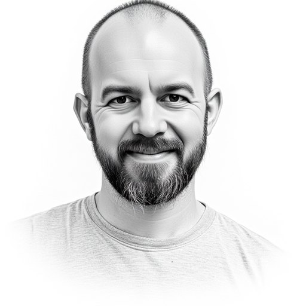

Tokyo, Japan
Technology leader & engineer. I automate things.
13+ years across startups, government and multinationals in robotics & autonomous driving. I grow teams and scale products as an engineer, people manager and PM — and try to bring a little cheer along the way.

Now — Sr. Technical PM / Product at Woven by Toyota · Arene platform: ADAS simulation, developer tooling, big data
Experience
Senior Technical Program Manager / Product Manager Woven by Toyota2021 — now
- Product on Arene, Toyota's next-generation software platform & dev tooling
- 3D simulation for ADAS testing and validation
- Developer tools, software automation, big-data collection & visualization
- Own a portfolio with 2,000+ B2B users across Toyota and 3rd-party supply chain
Engineering Lead Rapyuta Robotics2020 — 21
Led three client-facing projects ($0.2–1.5M) in warehouse & construction automation — automated forklifts, from perception/ML to customizing our SaaS/PaaS cloud backend.
Engineering Manager / Technical Lead Ascent Robotics2017 — 20
Joined as the 2nd engineer; grew with the company through Series A to lead the self-driving department of 30+ people, served as interim CTO, and owned architecture, hiring and roadmap. Earlier: senior robotics engineer designing the self-driving R&D platform.
Software / Robotics Engineer ZMP · Cognex · Hungarian Academy of Sciences2011 — 17
Self-driving platforms at ZMP; industrial vision SDKs at Cognex (products with $100M+ combined sales); 2D/3D computer vision and lidar point-cloud research at the Hungarian Academy of Sciences.
Education
- Georgia Institute of TechnologyMSc Computer Science — Computational Perception & Robotics2015 — 18
- Budapest University of Technology & EconomicsBEng Computer Engineering — Autonomous Control Systems & Robots2006 — 12
- Florida Institute of TechnologyBSc Computer Science (EU STARS scholarship)2009 — 10
Off the clock
Motorcycles, beer brewing, home automation and photography. When I'm not working I'm usually traveling, exploring the city, or out on the bike.